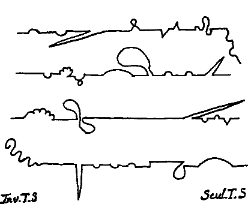

(1713-68)
Dıştan bakıldığında Laurence Sterne'in A Sentimental Journey Through France and Italy adlı eseri açıkçası kayıp bir kitaptır. Kitabın başlığı öyküye uymamaktadır, çünkü ikinci cilt sona erdiğinde anlatıcı Papaz Yorick, henüz İtalya'ya adımını bile atmamıştır. Kitap, yazın tarihinin en ünlü kısa kesilmiş ve tamamlanmamış tümcelerinden biriyle sona erer: "Böylece elimi uzattığımda dokunduğum şey Fille de Chambre'ın..."{129} Sterne, A Sentimental Journey'nin yayımlandığı yıl öldü, ancak Yorick'in Roma'ya ulaşmasını ya da okuyucunun Yorick'in uzanan elinin Fille de Chambre'ın hangi niteliğiyle buluştuğunu keşfetmesini engelleyen şeyin, Sterne'in kişi olarak ölümlülüğünün zamansız bir biçimde ortaya çıkışı olduğunu düşünmek de Sterne'in roman sanatını tümden yanlış anlamak olur.
Sterne'in başyapıtı The Life and Opinions Tristram Shandy, 1759'da yayımlandı. O zamanlar Sterne, Yokshire'ın kırsal kesiminde küçük bir kilisenin rahibiydi. Bölgede daha önce yayımlanmış tek şey de, din mahkemeleri konusunda patlak veren bir anlaşmazlık esnasında ortaya çıkan alaylı yergilerdi ve zaten onlar da yetkililer tarafından yakılmıştı. Hem kendi gençliğinden kaynaklanan şıpsevdi karakteri ve arzuları, hem de karısının sinirsel dengesizliği ve "tartışma ve didişmelere" düşkünlüğü yüzünden evliliği bozuldu. Çevresinde kendisi gibi düşünen insanlar bulunmadığı için hiç yakın dostu yoktu ve hava koşullarından ötürü sık sık dış dünyayla bütün teması kesildiği gibi, ciğerlerinin zayıf olmasından ötürü de evinden dışarı pek çıkamıyordu.
Tristram Shandy'nin kişisel biçemi, yazarının inziva benzeri bir yaşam sürdürmesinin bir sonucu kabul edilir. Gerçekten istese de istemese de dilediğini yapabilir, her türlü tuhaf fikri edinebilir ve her bir gelip geçici hayali de dilediğince kullanabilirdi. Fakat Tristram Shandy'nin ardında yatan deha, yalnızca koşulların yan ürününe indirgenemez. Ayrıca Sterne, hem eserin ilk taslağını bir komşusuna okurken adamın uyuya kalması üzerine kâğıtları ateşe fırlatıvermişti (ama eser, bir parça yanmış da olsa kurtarıldı), hem de yayıncı Robert Dodsley'nin talimatıyla Yorkshire ruhban sınıfına da alaylı dokundurmaları yumuşattı. "Yerel unsurların tamamı kitaptan çıkarıldı" diye yazıyordu. Kitabın apaçık tuhaflıklarına karşın Sterne de, bir okuyucu kitlesine sahip olmak ve bu kitleyi korumak isteyen bir yazardı.
1759 tarihinde bir okuyucu, The Life and Opinions of Tristram Shandy'nin girişinde neyle karşılaşacaktı? Kitap, dünyaya gelişi, annesinin ikide bir babasına saatin kritik bir anda kurulup kurulmadığını sormasıyla adeta daha da hızlanan Tristram'ın doğumuyla başlar. Anlatıcı, kendisinin Horace'ın kurallarına bağlı kalmayacağını bildirir, hatta Latin şairin önerilerinin aksine, öyküye tam anlamıyla ab avo, yani "yumurtadan" başlar. Gerçi babaya sorsanız öykü, in media res (her şeyin tam da ortasında) başlayacaktır. Anlatıcı, "şimdiye kadar herhangi bir kişinin kurallarına" da bağlı kalmayacaktır. Kitapta, dönüp dolaşılıp yeniden anlatılan konular, yayıncıya kısa notlar, tipografik ani geçişler, üstü çizilmiş eksiksiz sayfalar, kahramanın aslında Trismegistus adını alacakken her zaman olduğu gibi bir hatanın söz konusu olması gerçeği, dipnotlar, yıldız imleri, bezginlik ünlemleri ve bir vaaz yer alır. Üstelik, 2. cildin sonuna gelindiğinde de anlatıcı, henüz doğmamıştır bile. Bir romanın "Başlangıçta" diye başlayıp "erdi muradına" türünden dümdüz bir gelişme çizgisi içermesini bekleyenler için de Sterne, kendisine özgü olay örgüsünü grafik simgelerle açıklamaya girişir:

Dr. Johnson, belki de en ünlü eleştirel hatasını gerçekleştirerek yıllar sonra şöyle diyordu: "Tuhaf olan hiçbir şey uzun süre kalıcı olamaz; Tristram Shandy de kalıcı olamadı." O zamanlar Monthly Review daha iyimserdi: Sterne'in romanı kolaylıkla, "Methusalem{130} kadar uzun yaşasa bile, hakkında yazabileceği yeterince malzeme sağlamakta." Hatta bir sonraki yıl yayımlanan 4. ciltte Sterne'i sık sık yaptığı gibi konu dışına çıkarak yazma, okuma, var olma ve yaşama arasındaki farklılıklar hakkında fikir belirtmeye yönlendiren de bu eleştiri olabilir:
Bu ay tam bir yıl önce şu anda olduğumdan koca bir yıl daha yaşlıyım, ayrıca gördüğünüz gibi, dördüncü cildimin neredeyse yarısına –ve birinci günlük yaşantımın da sonuna– geldiğime göre, bu da demektir ki, şimdi yazmak için önümde üç yüz altmış dört günüm var; ilk başladığımda olduğundan daha fazla... Bu hızla gittiğimde, yazdığımdan 364 kez daha hızlı yaşamam gerekmekte; bu da demektir ki, zatıâlileriniz de izin verirse, ne kadar fazla yaşarsam o kadar fazla yazmam gerekecek ve sonuçta da zatıâlileri ne kadar fazla okurlarsa zatıâlilerinin yine bir o kadar okumaları gerekecek.
Sonuçta ve kronolojik açıdan Tristram, yazmaya başladığında olduğu yaşa gelmek zorundadır ve bu yaş hakkında da bizlere o zamanlar neler yazmakta olduğunu anlatması gerekmektedir. Üstelik bunu anlattığı bölümde de, az önce okuduğumuz bölümün yanı sıra, onun yazarkenki ve yazdıktan sonraki diğer gözlemlerini de aktarmalıdır (şöminenin kenarındaki sinek, halının deseni, kokteyl dolabının arkasındaki doldurulmuş gelincik gibi). Bu kendi kendini yineleyen bir paradoks, zaman içinde tam bir tersliktir. Tristram asla yaşamının sonunu kaleme alamaz, çünkü yüreği sıkıştığında, ciğerleri patladığında ya da beyni tıkandığında neler olup bittiğini açıklayacak sondan bir önceki ifadeyi söyleyebilmek bir yana, o nihai noktayı koymayı bile başaramayacaktır. Tristram Shandy daha önceki bütün romanlardan ve daha sonrakilerin de birçoğundan sarsıcı denecek ölçüde farklıydı, ama yine de açıkça bir romandı. Romanda bir noktada, anlatıcı her bir insanın yüreğine yerleştirilmiş cam bir panel hayal eder, böylece insan "ruhu çırılçıplak" görebilir; "tüm devinimleriyle, tüm işleyişiyle gözlemlenir bir halde, tüm kurtçuklar ilk hayata atılışlarından sürünmeye başlamaya kadar izlenerek, tüm koşuşturmaları, sıçrayışları, kaprisleriyle seyredilerek." Bu, Sterne'in yenilikçi yönteminde bir metafor olarak durabilir. Sterne, geleneksel roman sanatının kullandığı bütün yapay gereçleri ve olay örgüsü dinamiklerini gerçekliği çağrıştırmak için kullanır. Pek de sağduyulu davranmayan Viktor Shklovsky, bu tuhaf ürüne "dünya yazın sanatındaki en tipik roman" demekteydi. Haklıydı da. Bütün romanlar kandırır ve bütün romanlar okuyucunun anlatılanların gerçek olmamasına inanması temeline göre işler. Aradaki fark ise, Sterne'in bu hilenin nasıl gerçekleştirildiğini göstermesidir.
Kullanılan yöntem, romanın gizli yapı iskelesinin ustaca çürütülmesinden ibaret olsaydı, Johnson'ın inandığı kadar temelsiz olurdu. Sterne'in ölümsüzlüğü, bizim yaşamımız adını verdiğimiz öyküye yaptığımızın aynısını kurgularımızda bulmayı umduğumuz anlatıma yapmış olmasıdır. Tristram'ın kılı kırk yaran babasını, şaşkın annesini ve savaş takıntısı olan Toby Amcası'nı betimlerken Sterne, canlı karakterler yarattı, ama bu karakterler yine de okuyucuya anlatılamaz düzeyde yakın geldi. 4. ciltte şöyle yazar: "Bizler yolumuza çıkıveren ve karanlık yüzleri olan bulmacalar ve gizemler arasında, en aşikâr şeyler arasında yaşamaktayız, ama yine de bunları bir türlü aklımız almıyor, yine de bunun iyi yanını buluyoruz." Yazarın derinden insancıl görüşü o kadar kapsayıcıydı ki, kurgusal insanların bile ruhsuz varlıklara indirgenmelerine izin veremezdi. Dickens, Joyce ve Perec'te aynı özelliği, karakterlerin bağımsızlığında bulmaktayız. Amatör roman yazarları, karakterlerini olsa olsa satranç taşları gibi kullanabilirler.
Sterne, Tristram Shandy için toplam dokuz cilt yazdı ve dokuzuncuyu da bütünün bir yorumu kabul edilebilecek bir ifadeyle sonlandırdı:
– Ulu Tanrım! dedi annem, bütün bu öykü ne hakkında?
– Uydurma bir öykü, dedi Yorick. Üstelik de hayatımda dinlediğim, türünün en iyisi.
SON
Sterne, dostu William Combe'a 10. cildin bir aralar hazırlanmakta olduğunu yazmıştı, ama sayısız tüberküloz krizlerinden biri yüzünden bu eser "doğmadan öldü." Bir başka dostunun öğrendiğine göre, dört ciltlik başka bir eserin (muhtemelen A Sentimental Journey) ardından Tristram Shandy'ye devam edecekti. Fakat 9. cildin sonundaki o tek sözcük yeterince bitirici görünmektedir. "Bir varmış bir yokmuş"u güvenilmez ve tartışılır bir başlangıç haline getiren bir adam açısından, "Onlar ermiş muradına" diye bir şey olamazdı. Kendi vardığı sonucun kapanından bu kadar uzun bir süre uzak durabilmesinin ardından da son olmayan bir son, gelenekselin kısıtlamalarından son bir sıyrılma çabası olarak görülebilir. Belki de Sterne'in kendisi de, büyük olasılıkla tamamlanmamış, kesinlikle de bir son verilmiş, fazlasıyla insanca ve kutsal ilahi düzeyde komik eserleri gibi, elini uzattı, kavramaya çalışmak için o elle tutulmaz, her zaman erişilebilirin biraz ötesinde duran, kutsal Fille de Chambre'ın –